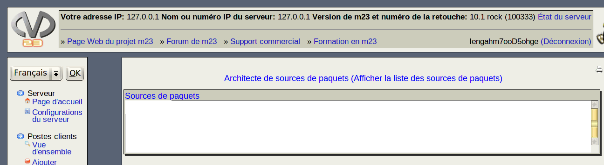

Sources de paquets: Ici, la liste de sources de paquets correspondante à votre source de paquets est affichée. Si vous souhaitez installer un poste client à partir de votre source de paquets, copiez les lignes affichées et ajoutez-les à la liste des sources de paquets du poste client.
dodger
2014-08-06